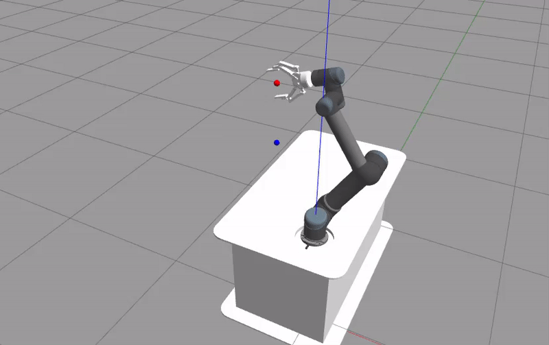

Universal Robots 5 Joint Control
{kind=link}
This UR5 environment’s task is to align the red ball to the blue ball. It can be imported via:
import mlpro.rl.pool.envs.ur5jointcontrol
Prerequisites
The environment has been tested in Ubuntu 20.04 running ROS Noetic.
- The installation steps are as follow:
Install Ubuntu 20.04
Install ROS
Install Moveit
- Install Dependencies:
sudo apt-get install ros-$ROS_DISTRO-ur-client-library ros-$ROS_DISTRO-joint-trajectory-controller ros-$ROS_DISTRO-scaled-controllers ros-$ROS_DISTRO-speed-scaling-interface ros-$ROS_DISTRO-speed-scaling-state-controller ros-$ROS_DISTRO-pass-through-controllers
sudo apt install python3-pip
pip3 install stable-baselines3 gym pytest transformations dill rospkg catkin_tools empy defusedxml pymodbus numpy netifaces pycryptodomex gnupg
Build the Environment:
- The environment can be built automatically by passing p_build to the UR5JointControl class. Otherwise, the environment can be built with the following command:
cd $(python3 -c 'import os; import mlpro; print(os.path.dirname(mlpro.__file__))')/rl/pool/envs/ur5jointcontrol catkin_make
- Gazebo GUI:
The user can decide wether they want to use the GUI or not, by passing p_visualize to the UR5JointControl class.
from mlpro.rl.pool.envs.ur5jointcontrol import UR5JointControl
# p_visualize : Gazebo GUI
# p_build : Automated Builder
environment = UR5JointControl(p_build=True, p_visualize=True)
General Information
Parameter |
Value |
|---|---|
Agents |
1 |
Native Source |
MLPro |
Action Space Dimension |
[6,] |
Action Space Base Set |
Real number |
Action Space Boundaries |
[-0.1, 0.1] |
State Space Dimension |
[6,] |
State Space Base Set |
Real number |
State Space Boundaries |
[-2.0, 2.0] |
Reward Structure |
Overall reward |
Action Space
The action of the agent directly affects the joint angles (rad) of the robot. The action is interpreted as increments towards the current value.
Actuator |
Parameter |
Boundaries |
|---|---|---|
Shoulder Pan Joint |
rad |
[-0.1, 0.1] |
Shoulder Lift Joint |
rad |
[-0.1, 0.1] |
Elbow Joint |
rad |
[-0.1, 0.1] |
Wrist 1 Joint |
rad |
[-0.1, 0.1] |
Wrist 2 Joint |
rad |
[-0.1, 0.1] |
Wrist 3 Joint |
rad |
[-0.1, 0.1] |
State Space
The state space consists of position information of the end effector (Red Ball) and the target location (Blue Ball).
Element |
Parameter |
Boundaries |
|---|---|---|
PositionX |
m |
[-2.0, 2.0] |
PositionY |
m |
[-2.0, 2.0] |
PositionZ |
m |
[-2.0, 2.0] |
Targetx |
m |
[-2.0, 2.0] |
Targety |
m |
[-2.0, 2.0] |
Targetz |
m |
[-2.0, 2.0] |
Reward Structure
distance = np.linalg.norm(np.array(observations[:3]) - np.array(observations[3:]))
ratio = distance/self.init_distance
reward = -np.ones(1)*ratio
reward = reward - 10e-3
if done:
reward += self.reached_goal_reward
Change Log
Version |
Changes |
|---|---|
1.0.7 |
First public version |
Cross Reference
Howto 14 - (RL) Train UR5 with SB3 wrapper